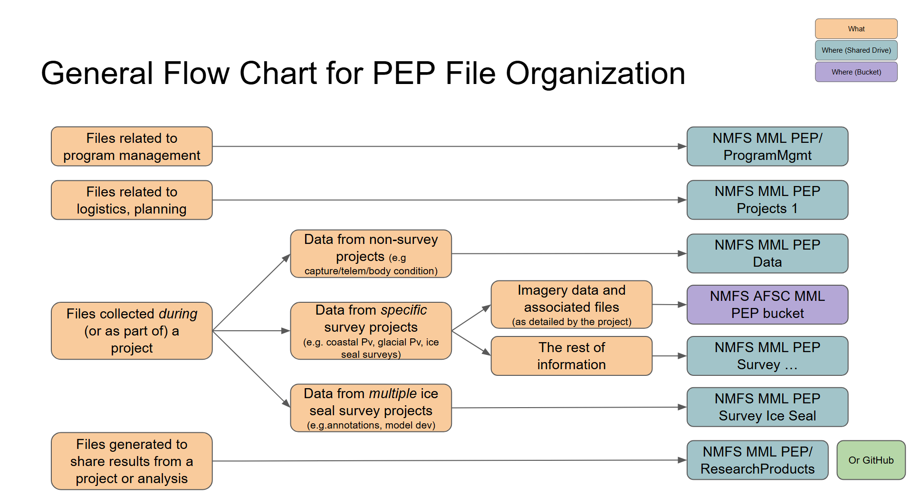
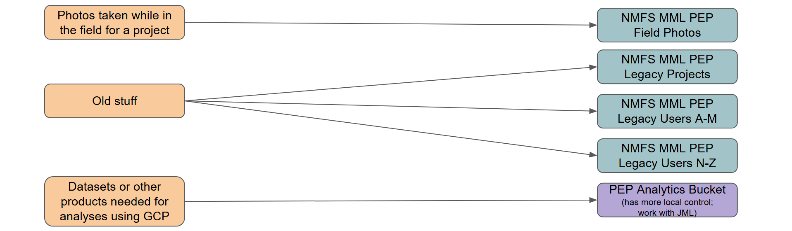

PEP Data Storage
This section details what PEP information is stored where within the cloud. See Onboarding for more information about how to work with data in these various locations.
Individual Storage
The two options available for storing individual files (such as administrative documentation, working copies of files, etc.) are your laptop or individual Google Drive (“My Drive”). No original or processed data should be stored exclusively in any of these resources. It is personal preference what you store where. Refer to Basics for suggestions for file naming and folder organization.
Backup/Recovery Procedures
Laptop
Your laptop needs to be set-up to back files up to Google Drive using Google Drive Desktop. Once configured, the folder(s) you select for back-up will be visible from the Google Drive website (under “Computers” in the left navigation pane).
Google Drive
The files you store on Google Drive are backed up using Google specifications:
- Google keeps a versioning history of files that can be viewed/recovered within the web browser.
- For G-suite files can be viewed within the file (File/Version History).
- For all other files (e.g. CSV files, Access DBs, pdfs) can be viewed through the web browser.
- Click on the 3 dots to open up the “More actions” options for the item of interest.
- Click File informationversions.
- Through this list of files, you can identify which version of a file to which you want to revert.
- To recover files, you need to act quickly:
- Within the first 30 days of a file being deleted, you can recover it via the Google Drive trash.
- After 30 days, the file can no longer be recovered.
PEP Storage Overview
Generally speaking, all original data and supplemental information to data collection are stored in a program storage resource.
In 2026, all files were migrated from the LAN (local network) to the cloud. PEP has data stored in two locations: Google Shared Drive and Google Cloud Platform. The following flow chart provides general guidelines for what can be found where:


PEP also has access to a traditional Windows File Server in the cloud (“X Drive”). The use of this resource is at an extremely high cost. No specific use for this resource has been identified for PEP at this time; the data management plan will be updated to reflect any changes to this in the future.
PEP Google Cloud Platform
Google Cloud Platform might also be referenced as “GCP” or “bucket(s)”. PEP currently has access to two bucket locations: afsc_mml_pep and pep_storage. These buckets are stored within the ggn-nmfs-afscinf-infra-01 project or within the aliased nmfs-trusted-images project. See Onboarding for more information about how to work with data in buckets.
Authentication for bucket access is now limited to 16-hour time windows, meaning your process will be interrupted if it is actively working with bucket data for more than 16 hours. This is most likely to impact AI/ML training and any potential long
afsc_mml_pep Bucket
The data stored in the afsc_mml_pep bucket:
| Bucket Folder | Details |
|---|---|
| environ | contains data downloaded from other sources that are used primarily as environmental covariates for ice seal survey analyses |
| kamera_calibration | images and associated data products for generating KAMERA calibration files |
| survey_harbor_seals_coastal | original images for coastal harbor seal surveys (including datasheets and GPS tracklines) |
| survey_harbor_seals_glacial | original images for glacial harbor seal surveys (including datasheets and GPS tracklines) |
| survey_harbor_seals_uas_2023 | images collected during 2023 USPAI survey |
| survey_ice_seals_2012 | images collected during 2012 BOSS survey |
| survey_ice_seals_2013 | images collected during 2013 BOSS survey |
| survey_ice_seals_2016 | images collected during 2016 ChESS survey |
| survey_ice_seals_2019_test | images collected during testing of the KAMERA system in 2019 in Kotzebue (these images were later processed for ice seals) |
| survey_ice_seals_2021 | images collected during 2021 JoBSS survey |
| survey_ice_seals_2024_test | images collected during testing of the KAMERA system in the King Air in 2024 in Nome |
| survey_ice_seals_2025 | images collected during 2025 Ice Seals survey |
| survey_polar_bear | images collected of polar bears from a variety of locations (including PEP effort in 2019 in Deadhorse) |
| test_imagery | images collected from flights testing equipment and image processing |
There are likely items that need to be better organized and/or cleaned up. Coordinate with S. Koslovsky to support reorg/transfers. Most of PEP has read-only access to the data in this location. Contact S. Koslovsky if you need different permissions.
pep_storage Bucket
PEP has a working bucket space for analytics: pep_storage. Coordinate with J. London for access and usage.
Backup/Recovery Procedures
Data are backed up based on AFSC back-up and recovery procedures: - 30 days “soft delete” (i.e. recycle bin) - Versioning: keep the most recent 5 versions of a file - Storage Class: Autoclass (storage becomes cheaper over time for unaccessed data) - between hot and almost as hot classes; will not go down to the coldest data classes because of cost to move between tiers - there will be some archival cold buckets available (where it requires a service desk ticket to get at data) - Disaster Recovery Snapshots (i.e. copies stored elsewhere) - Monthly snapshots for 12 months - Annual snapshots for 7 years